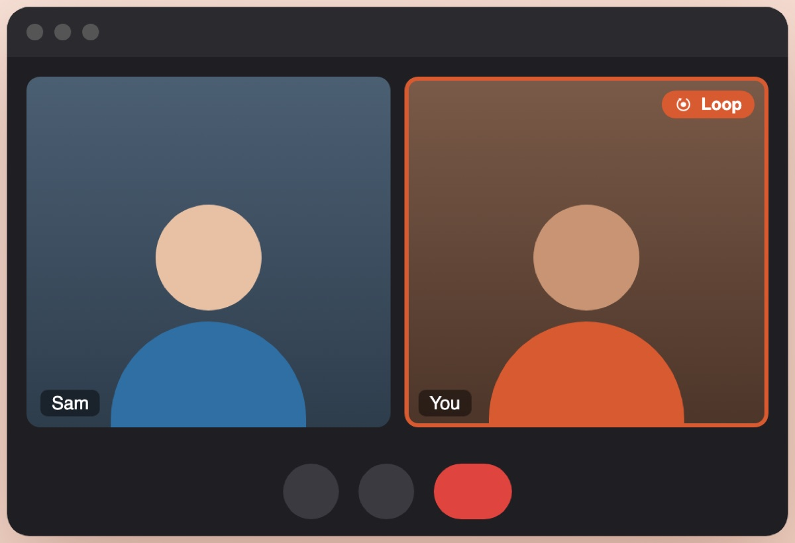
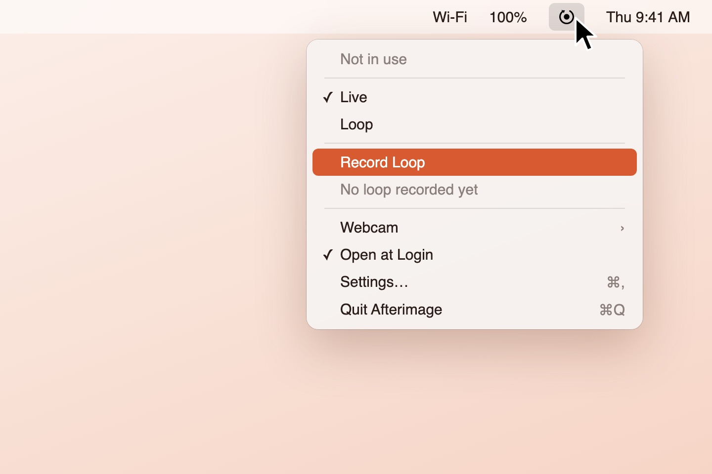
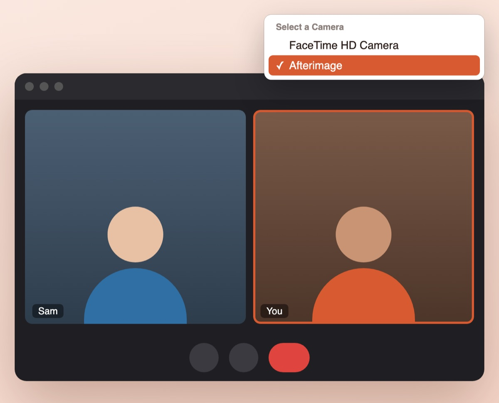
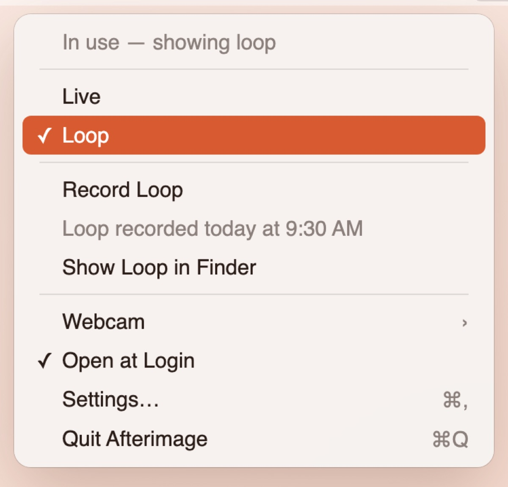

Step away.
Stay on camera.
Afterimage switches your video call to a looping clip of yourself, then back to live, without ever turning your camera off.
Free and open source. Requires macOS 14 Sonoma or later.

How it works
Record a 10-second loop
Afterimage lives in your menu bar, at the top right of your screen. Click its icon and choose Record Loop. Your clip plays forward, then backward, so it never jumps when it repeats.
Everything else is in the same menu, including Settings…
Tip: For the most convincing loop, record a new one right before each call, so your lighting, clothes, and background match.

Pick Afterimage as your camera
Do it once in Zoom, Google Meet, FaceTime, Teams, or any video app.
Not in the list? Quit the video app completely (for Zoom: zoom.us → Quit Zoom) and reopen it. Apps only look for cameras when they start.

Switch between Live and Loop
Flip from the menu bar whenever you need a moment away. The call never sees a camera change, so nobody gets a "camera turned off" notice.

Private by design
Nothing leaves your Mac
No accounts, no analytics, no uploads. Afterimage never connects to the internet. Privacy policy
Honest webcam light
Your real webcam only turns on while a video app is using Afterimage, or while you're recording.
One loop, kept small
Each new recording replaces the last, so loops never pile up on your Mac.
Ready for your next call?
Questions? See Support.